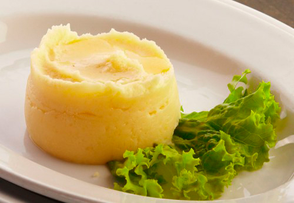

Картофельное пюре
Это отличный гарнир к мясным, рыбным блюдам. По желанию, в пюре можно добавить чеснок, обжаренный лук, сало и т.д. Из указанного количества ингредиентов получается 4–6 порций.
Ингридиенты:

1 кг картофеля
50–100 г сливочного масла
100–150 мл молока
соль
перец
Приготовление
Картофель почистить.
Залить водой.
Отварить до готовности (время приготовления зависит от сорта и размера картофеля).
Когда картофель сварится, воду слить.
Добавить масло.
Потолочь.
Добавить молоко, посолить, поперчить.
Потолочь.